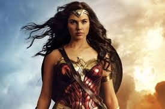

Flash é visto.
.webp)
ele é muito elegante.
flash
Flash é um dos superheroís mais populares e poderosos que existe.
flash é estiloso
possui grande elegancia e habilidades incriveis.
O Flash, herói da DC Comics, tem uma galeria de vilões e aliados marcantes. Entre seus principais vilões estão o Velocista Escarlate, seu rival mais perigoso, e o Doutor Destino, que utiliza a manipulação do tempo como sua principal arma. Outros inimigos notáveis incluem o Gorilla Grodd, um gorila superinteligente com poderes telepáticos, e a Mulher-Gavião, que possui uma relação complexa com o herói. Já seus aliados incluem a Mulher-Maravilha, o Lanterna Verde e o Arqueiro Verde, além de sua equipe de apoio, como Cisco Ramon e Caitlin Snow, que ajudam em suas aventuras científicas e na luta contra o crime.
Mulher-Maravilha
É uma guerreira amazona com força sobre-humana, habilidades de combate e um laço mágico. Ela é uma das fundadoras da Liga da Justiça e símbolo de justiça, coragem e igualdade e uma aliada do flash.
Lanterna Verde
É um membro da Tropa dos Lanternas Verdes, com um anel que lhe concede poder ilimitado. Ele usa esse poder para proteger o universo e um aliado do flash.
Arqueiro Verde
É um bilionário e vigilante que luta contra o crime com seu arco e flechas. Ele é conhecido por sua habilidade com o arco.
Doutor Destino
Esse é um cientista genial, após um acidente que descofigurou seu rosto ele se tornou um mestre das artes misticas
Gorilla Grodd
É um gorila superinteligente e telepata do universo DC. Ele busca conquistar o mundo e derrotar seus oponentes com seu poder mental.
Mulher-Gavião
É uma heroína da DC com habilidades de voo e força sobre-humana. Ela é a reencarnação de uma princesa egípcia e luta ao lado de heróis como o Lanterna Verde.